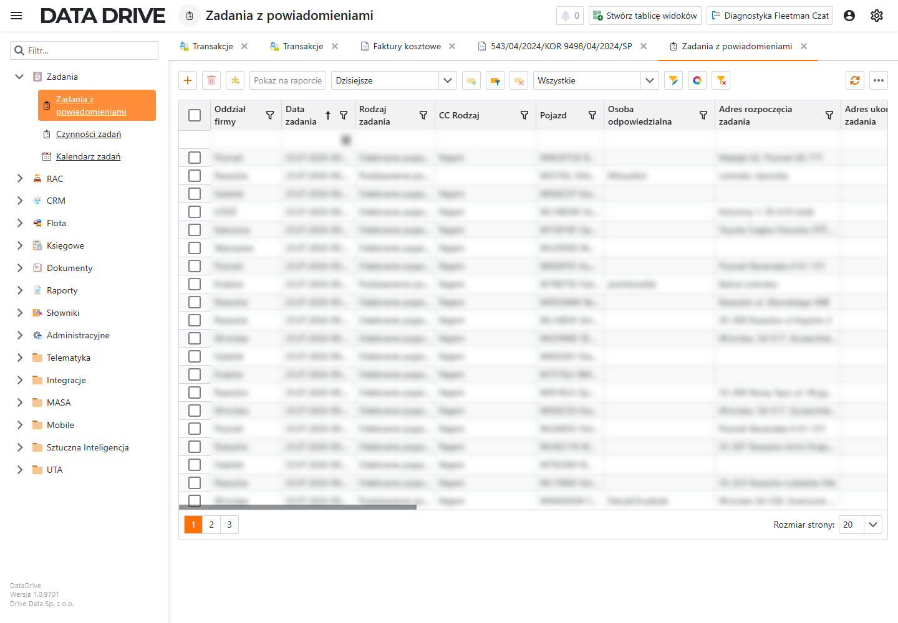
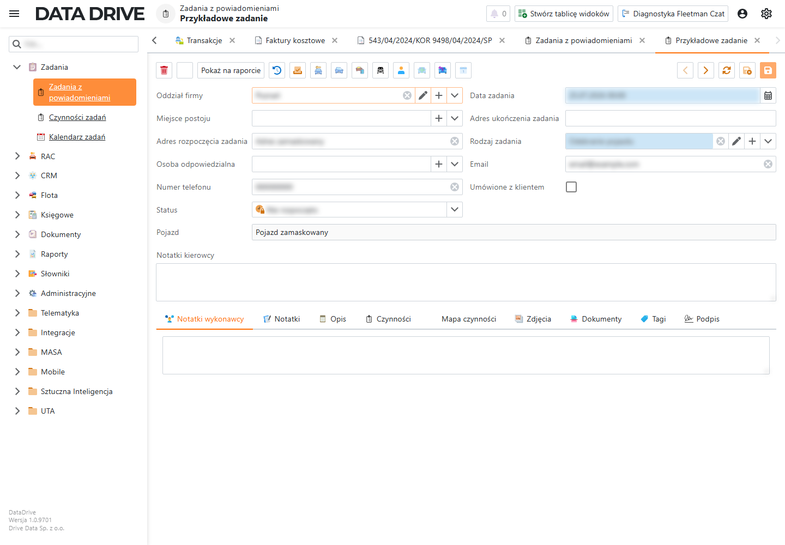
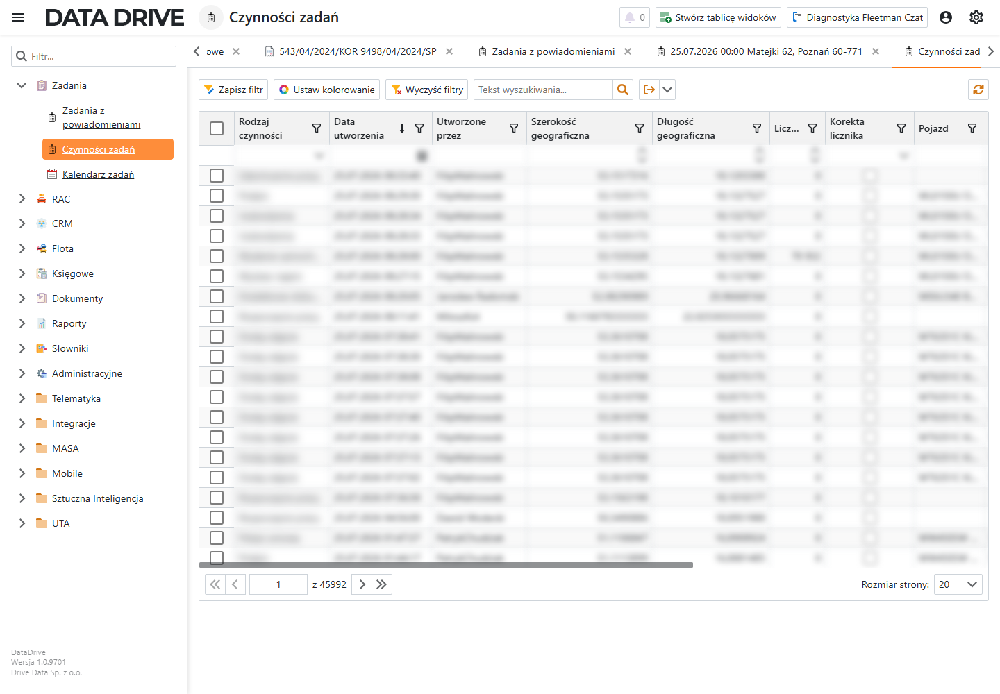
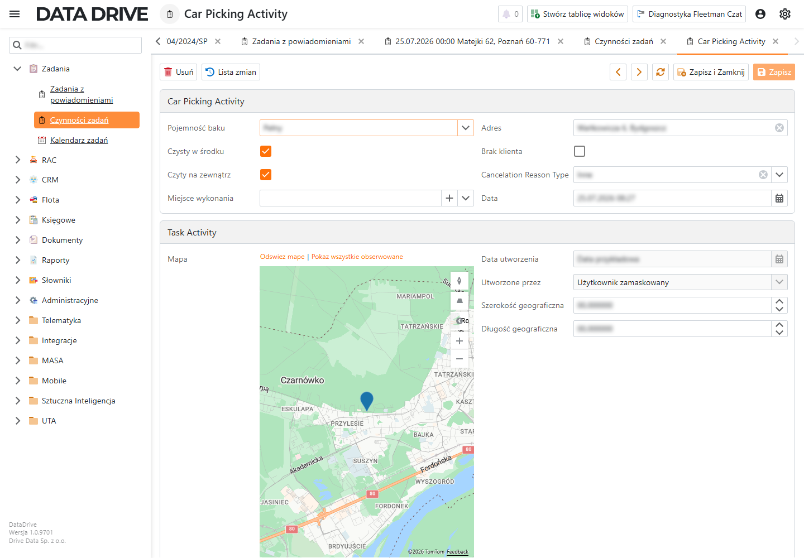

Zadania
Moduł zadań pozwala zaplanować pracę, przypisać osobę odpowiedzialną, wskazać pojazd i zebrać czynności wykonane w terenie.
O module zadań
Grupa Zadania zawiera trzy ekrany: Zadania z powiadomieniami, Czynności zadań i Kalendarz zadań. Lista zadań pokazuje pracę do wykonania. Czynności zapisują wykonane kroki, na przykład wydanie pojazdu, podpis, zdjęcie albo zakończenie pracy.
Zadanie może być połączone z pojazdem, najmem, zleceniem, transportem albo kartą Control Card. Dzięki temu użytkownik widzi, skąd pochodzi praca i jakiego rekordu dotyczy.
Lista zadań
Ekran Zadania z powiadomieniami pokazuje bieżące zadania w siatce. Domyślny filtr Dzisiejsze ogranicza listę do zadań z datą przypadającą na dziś.

- Oddział firmy
- Oddział, który obsługuje zadanie.
- Data zadania
- Termin rozpoczęcia zadania. Siatka sortuje zadania według tej daty.
- Rodzaj zadania
- Typ pracy, na przykład podstawienie pojazdu, odbiór pojazdu albo kontakt z klientem.
- CC Rodzaj
- Rodzaj użycia pojazdu z powiązanej karty Control Card.
- Pojazd
- Pojazd przypisany do zadania.
- Osoba odpowiedzialna
- Pracownik, który ma wykonać zadanie.
- Adres rozpoczęcia zadania
- Miejsce, w którym użytkownik zaczyna zadanie.
- Adres ukończenia zadania
- Miejsce, w którym użytkownik kończy zadanie.
- Ostatnia notatka
- Ostatni wpis dodany do notatek zadania.
- Opis
- Szerszy opis zadania i kontekstu dla osoby odpowiedzialnej.
- Status
- Bieżący stan zadania: Nie rozpoczęto, W toku, Anulowany albo Zakończony.
- Numer telefonu
- Telefon kontaktowy używany przy wykonaniu zadania.
- Adres e-mail kontaktu. Aplikacja sprawdza poprawność adresu przy zapisie.
- Nr Najmu
- Numer powiązanego najmu.
- Nr Zlecenia
- Numer powiązanego zlecenia PAZ.
- Cena cennikowa
- Cena z cennika użyta przy zadaniu powiązanym z najmem.
- Nr ControlCard
- Numer powiązanej karty Control Card.
- Koszt najmu
- Koszt najmu powiązany z zadaniem.
- Nr Transportu
- Numer transportu powiązanego z zadaniem.
- Koszt najmu umowny
- Koszt wynikający z warunków umowy.
- Ostrzeżenie
- Komunikat aplikacji, jeśli zadanie wymaga uwagi.
- Numer szkody
- Numer szkody z powiązanego zlecenia.
- Rodzaj zlecenia
- Rodzaj powiązanego zlecenia PAZ.
Detal zadania
Detal zadania pokazuje dane potrzebne do wykonania pracy: termin, adresy, osobę odpowiedzialną, kontakt i pojazd. Z tego miejsca otwierasz też notatki, opis, czynności, zdjęcia, dokumenty, tagi i podpis.

- Oddział firmy
- Oddział odpowiedzialny za zadanie.
- Miejsce postoju
- Lokalizacja z kartoteki. Po wyborze miejsca aplikacja może przepisać jego nazwę do adresu rozpoczęcia zadania.
- Adres rozpoczęcia zadania
- Adres, pod którym użytkownik zaczyna pracę.
- Osoba odpowiedzialna
- Pracownik, który wykonuje zadanie.
- Numer telefonu
- Telefon do kontaktu w sprawie zadania.
- Status
- Stan zadania. Wybierz Zakończony po wykonaniu pracy albo użyj akcji Zrobiono.
- Data zadania
- Termin zadania. To pole jest wymagane.
- Adres ukończenia zadania
- Adres, pod którym użytkownik kończy pracę.
- Rodzaj zadania
- Typ pracy ze słownika Rodzaj zadania. To pole jest wymagane.
- Adres e-mail kontaktu. Jeśli wpiszesz adres, aplikacja sprawdza jego format przy zapisie.
- Umówione z klientem
- Zaznacz, gdy termin został potwierdzony z klientem.
- Pojazd
- Pojazd przypisany do zadania.
- Notatki kierowcy
- Miejsce na informacje przekazane kierowcy lub pracownikowi terenowemu.
- Notatki wykonawcy
- Zakładka z notatkami osoby wykonującej zadanie.
- Notatki
- Lista notatek powiązanych z zadaniem.
- Opis
- Pełny opis zadania.
- Czynności
- Lista wykonanych czynności dla tego zadania.
- Mapa czynności
- Mapa punktów zapisanych przez czynności. Aplikacja wylicza ją z szerokości i długości geograficznej czynności.
- Zdjęcia
- Zdjęcia powiązane z zadaniem.
- Dokumenty
- Skany i pliki przypisane do zadania.
- Tagi
- Tagi porządkujące zadanie.
- Podpis
- Podpis zebrany przy wykonaniu zadania.
Aby oznaczyć zadanie jako wykonane, wykonaj następujące kroki:
- W grupie Zadania otwórz Zadania z powiadomieniami.
- Zaznacz jedno lub więcej zadań na liście.
- Na górnym pasku kliknij Zrobiono.
Aplikacja ustawi status zaznaczonych zadań na Zakończony i odświeży listę.
Czynności zadań
Ekran Czynności zadań pokazuje wykonane czynności z wielu zadań. Użyj go, gdy chcesz sprawdzić, kto wykonał pracę, kiedy ją wykonał i czy zapisał licznik lub lokalizację.

- Rodzaj czynności
- Typ wykonanej czynności, na przykład wydanie samochodu, podpis, zdjęcie albo zakończenie pracy.
- Data utworzenia
- Data i godzina zapisania czynności. Aplikacja uzupełnia ją przy utworzeniu rekordu.
- Utworzone przez
- Użytkownik, który dodał czynność. Aplikacja uzupełnia go z bieżącego konta.
- Szerokość geograficzna
- Współrzędna miejsca wykonania czynności.
- Długość geograficzna
- Współrzędna miejsca wykonania czynności.
- Licznik
- Stan licznika pojazdu zapisany przy czynności.
- Korekta licznika
- Zaznaczenie oznacza, że wpis koryguje licznik.
- Pojazd
- Pojazd z zadania, którego dotyczy czynność.
- Nr Najmu
- Numer najmu z powiązanego zadania.
- Nr Zlecenia
- Numer zlecenia PAZ z powiązanego zadania.
- Nr ControlCard
- Numer karty Control Card z powiązanego zadania.
- Osoba odpowiedzialna
- Pracownik przypisany do zadania.
Detal czynności
Detal czynności zależy od jej typu. Poniższy przykład pokazuje czynność wydania samochodu. Oprócz pól wspólnych ma pola dotyczące baku, czystości, miejsca wykonania i klienta.

- Pojemność baku
- Poziom paliwa zapisany przy wydaniu lub odbiorze pojazdu.
- Czysty w środku
- Zaznacz, jeśli pojazd był czysty wewnątrz.
- Czyty na zewnątrz
- Zaznacz, jeśli pojazd był czysty z zewnątrz. Etykieta jest zapisana w aplikacji dokładnie w tej formie.
- Miejsce wykonania
- Lokalizacja z kartoteki, jeśli czynność wykonano w znanym miejscu.
- Adres
- Adres wykonania czynności.
- Brak klienta
- Zaznacz, gdy czynność wykonano bez obecności klienta.
- Cancelation Reason Type
- Powód anulowania w formie słownikowej. Etykieta jest po angielsku, bo aplikacja nie ma tu polskiej nazwy wyświetlanej.
- Data
- Data czynności.
- Mapa
- Mapa punktu, w którym zapisano czynność. Aplikacja wylicza położenie z pól współrzędnych.
- Data utworzenia
- Data utworzenia rekordu czynności. Aplikacja uzupełnia ją przy zapisie.
- Utworzone przez
- Użytkownik, który utworzył czynność. Aplikacja uzupełnia go z bieżącego konta.
- Szerokość geograficzna
- Współrzędna punktu czynności.
- Długość geograficzna
- Współrzędna punktu czynności.
Aby sprawdzić czynność zadania, wykonaj następujące kroki:
- W grupie Zadania otwórz Czynności zadań.
- Wyszukaj czynność po rodzaju, dacie, użytkowniku albo pojeździe.
- Otwórz wiersz podwójnym kliknięciem.
- Sprawdź pola detalu oraz mapę, jeśli czynność ma zapisane współrzędne.
Otworzy się detal czynności z danymi zapisanymi podczas wykonania pracy.
Ostatnia weryfikacja: 25 lipca 2026